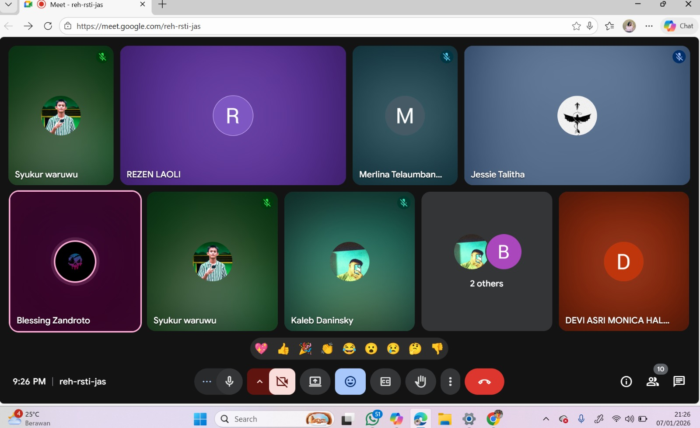
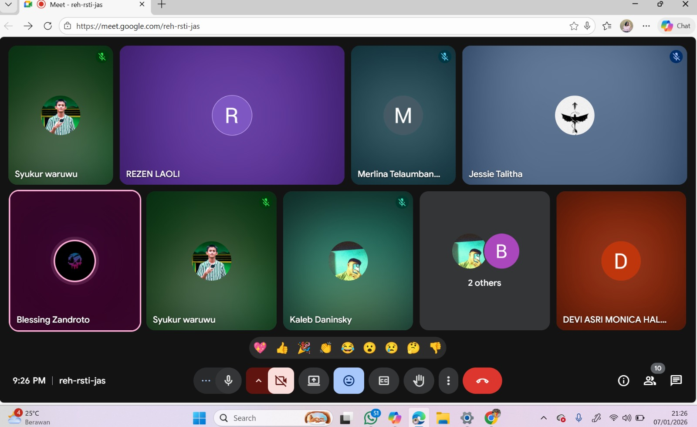
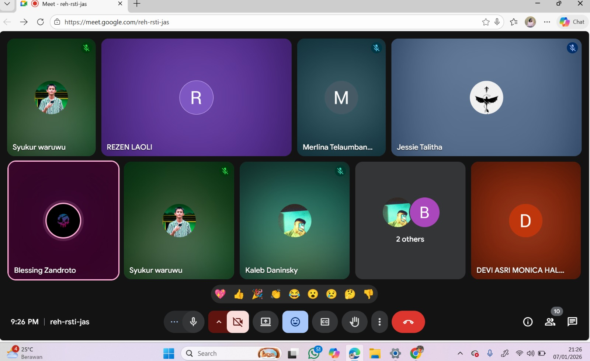

Gallery
Galeri ini berisi dokumentasi kegiatan saya selama di sekolah, kegiatan pembelajaran daring, serta momen-momen penting yang berkaitan dengan pendidikan dan pengembangan diri.
 



Pelajar TJKT yang tertarik pada teknologi, jaringan komputer, dan desain web modern.
Website ini merupakan portofolio pribadi saya yang berisi informasi tentang latar belakang, keterampilan, pengalaman, serta hasil karya yang telah saya buat selama menempuh pendidikan di SMK jurusan TJKT.
Hubungi SayaSaya adalah seorang pelajar yang memiliki minat besar di bidang teknologi, khususnya komputer, desain grafis, dan pemasaran digital. Saya senang mempelajari hal-hal baru, terbiasa bekerja dengan perangkat teknologi, serta memiliki semangat untuk terus mengembangkan keterampilan akademik dan praktis.
Syukur Analisa Waruwu
Nias, 8 Mei 2009
Pelajar SMK
Teknik Jaringan Komputer dan Telekomunikasi (TJKT)
Hardware Komputer, Desain Grafis, Digital Marketing
syukuranalisawaruwu@gmail.com
Berikut adalah beberapa keterampilan yang saya kuasai, baik di bidang teknologi informasi, jaringan komputer, maupun perbaikan perangkat. Skill ini saya peroleh melalui pembelajaran di sekolah, latihan mandiri, serta pengalaman praktik.
Bagian ini menampilkan beberapa proyek yang pernah saya kerjakan, baik berupa pembuatan website, layanan service komputer, maupun desain digital. Proyek-proyek ini mencerminkan kemampuan dan kreativitas saya dalam bidang teknologi.
Sertifikat yang saya miliki merupakan bukti partisipasi dan pencapaian saya dalam kegiatan akademik maupun non-akademik. Sertifikat ini menunjukkan komitmen saya untuk terus belajar dan meningkatkan kompetensi diri.
Galeri ini berisi dokumentasi kegiatan saya selama di sekolah, kegiatan pembelajaran daring, serta momen-momen penting yang berkaitan dengan pendidikan dan pengembangan diri.

Jika Anda tertarik untuk bekerja sama, berdiskusi, atau ingin mengetahui lebih lanjut tentang saya, silakan hubungi saya melalui media sosial atau email di bawah ini.